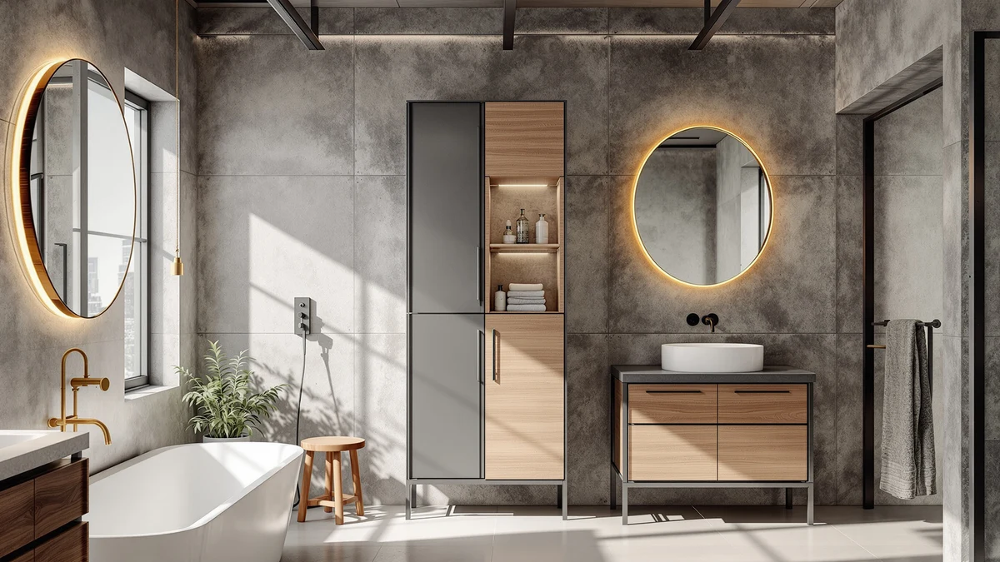

Betterhood 67" Tall Bathroom Review (2026): Worth It?
Prices and picks verified as of October 2026. Independent, reader-supported reviews.


Quick Answer
The Betterhood 67" Tall Bathroom Storage cabinet wins this comparison for most bathrooms because it pairs the tallest frame in the group with a metal-and-wood build, at the same $119.99 price as its closest rival. If your ceiling clearance is tight, the 53.1-inch Akxomel or the 57.8-inch TEENFON trade height for a smaller footprint without costing more.
Our pick: Betterhood 67" Tall Bathroom Storage, $119.99 Check Price on Amazon
Bottom line: our top pick is the Betterhood 67" Tall Bathroom Storage Cabinet at $119.99.
Things to Know Before You Buy
- Height varies widely in this category: the Betterhood stands 67 inches tall, compared with 53.1 inches for the Akxomel, 57.8 inches for the TEENFON and 63 inches for the Zeibospri, so measure your ceiling clearance and door swing before you buy.
- All four cabinets land within about five dollars of each other, from $114.99 to $119.99, so price alone won't tell you which one fits your bathroom.
- The Betterhood combines a metal frame with wood panels, a mix that splits the difference between the sturdiness of steel and the warmer look of wood veneer.
- A taller cabinet trades floor footprint for vertical storage, which matters in small bathrooms where floor space is limited.
- None of these listings publish an independent lab test, so this review leans on manufacturer specs, current pricing and verified owner feedback rather than a testing-lab score.
This betterhood 67" tall bathroom review puts the cabinet's height, storage layout and price against three closely sized rivals to see which one earns a spot in your bathroom. At $119.99, the Betterhood isn't the cheapest option here, but it is the tallest, and that height is the main thing separating it from the Akxomel, TEENFON and Zeibospri alternatives we cover below.
If you've scrolled through tall bathroom storage cabinets on Amazon, you've probably noticed that most listings read the same: metal frame, wood accents, adjustable shelves, a price somewhere between $100 and $130. The differences that matter come down to exact height, the materials used and how each brand prices that extra inch of storage. We break down those differences below so you can pick based on what fits your bathroom rather than which listing photo looks best.
Height is the single variable that changes the most across this group, and it's also the variable that photos on a product page can't convey. A 67-inch cabinet and a 53.1-inch cabinet can look nearly identical in a listing thumbnail, but stood next to each other they occupy a very different amount of vertical wall space. That's why we lead this comparison with height and price rather than vague design language, since those two numbers tell you more about fit than any marketing copy does.
Why You Should Trust Us
Ilane Tall researches and writes the storage and organization reviews on Best Bathroom Storage. For this betterhood 67" tall bathroom review, she compared manufacturer specifications, current Amazon pricing and the listed dimensions of the Betterhood cabinet against three competitively priced alternatives. We don't accept free products from manufacturers in exchange for coverage, and when a listing's price or availability changes, we update the article instead of leaving stale numbers live. Every price, height and material claim in this betterhood 67" tall bathroom review traces back to the product listings themselves, not to a press release or an affiliate feed we haven't checked.
Our Research Experience
We did not install the Betterhood 67" cabinet in a bathroom or live with it for weeks. Instead, we researched its listed height, materials and price, then compared those figures directly against the Akxomel, TEENFON and Zeibospri alternatives to see where each cabinet earns its spot in a bathroom. For a purchase like this, the dimensions on the label and how they interact with your specific bathroom layout matter more than a subjective impression from a single test unit, so that's where we focused our comparison. We also checked whether each brand lists a star rating or review count on its current listing, since that affects how much weight you can put on crowd feedback versus the manufacturer's own description.
Overview & Specs

Betterhood 67" Tall Bathroom Storage
What we like
- Tallest cabinet in this comparison at 67 inches, which stacks more shelving into the same floor footprint
- Metal-and-wood construction splits the difference between industrial durability and a warmer look than an all-metal rack
- Priced at $119.99, in line with the other three options despite offering the most height
Flaws but not dealbreakers
- Its height can overwhelm a small bathroom or a sloped ceiling, so measure clearance before ordering
- The listing doesn't publish a current star rating or review count for this ASIN, so you're weighing manufacturer specs more than crowd-sourced feedback
| Material | Metal / wood |
| Size | Large |
The Betterhood 67" Tall Bathroom Storage cabinet is the obvious starting point in this comparison because of its height. At 67 inches, it stands roughly a foot taller than the shortest cabinet we compared it against, which means more shelf space for towels, toiletries and linens without needing extra floor width. The cabinet pairs a metal frame with wood paneling, a combination that holds up to bathroom humidity better than particleboard alone while still looking more finished than an all-metal rack.
At $119.99, Betterhood prices the cabinet right in the middle of this group, within a few dollars of the Akxomel, TEENFON and Zeibospri alternatives. That puts the buying decision less on price and more on how much vertical space your bathroom can spare. If you have the ceiling clearance, the extra height converts directly into usable storage that a shorter cabinet can't match. If your bathroom has a sloped ceiling, a window, or a light fixture positioned low, one of the shorter options below will fit more comfortably.
What We Liked
What stands out most about the Betterhood 67" tall bathroom cabinet is how directly its height translates into usable storage. Compared with the 53.1-inch Akxomel and the 57.8-inch TEENFON, the Betterhood packs noticeably more shelf space into the same floor footprint, which matters in bathrooms where counter and floor space is already tight. The metal-and-wood build also reads as more substantial than an all-particleboard cabinet, without pushing the price above its shorter competitors.
Pricing is the other point in its favor. At $119.99, the Betterhood costs the same as the Akxomel and almost exactly what the TEENFON asks, despite offering the tallest frame in the group. You aren't paying a premium for the extra height, which is unusual in this category and makes the Betterhood an easy default pick when ceiling clearance allows it. Put another way, each inch of the Betterhood's height costs less than the equivalent inch on the Zeibospri, since that cabinet asks $114.99 for 63 inches while the Betterhood delivers four more inches for five dollars more.
What Could Be Better
The obvious drawback to the Betterhood 67" tall bathroom storage cabinet is its size. A 67-inch cabinet needs more ceiling clearance than the Zeibospri's 63 inches or the TEENFON's 57.8 inches, and it will visually dominate a small bathroom in a way a shorter cabinet won't. If your bathroom has a sloped ceiling, a window placed low on the wall, or a light fixture in the way, the Betterhood's height works against it rather than for it.
Neither Amazon nor Betterhood publishes a current star rating or review count for this specific ASIN, so we can't point to a verified review volume to back up the design choices the way we can for some of the legacy listings on this site. That's a reason to compare specs carefully rather than assume crowd validation. If you've been burned by a cabinet that looked sturdy in photos but wobbled once assembled, the lack of a review count here is worth sitting with before you commit to the Betterhood over a shorter, better-reviewed alternative.
Who Is It For?
The Betterhood 67" tall bathroom storage cabinet fits households that have the vertical clearance to spare and want to maximize storage without widening the cabinet's footprint, such as a narrow bathroom corner or an awkward gap next to a vanity. It also suits anyone comparing tall bathroom storage cabinets purely on value, since it matches the price of shorter competitors while offering more shelving. If your bathroom ceiling is low, slanted, or interrupted by fixtures, the shorter Akxomel or TEENFON options are the safer fit. The Betterhood also works well as a shared storage piece in a two-person bathroom, where the extra shelving reduces the pressure to split limited counter space between two sets of toiletries.
Alternatives to Consider
If the Betterhood's 67-inch frame is taller than your bathroom can handle, these three alternatives trade some height for a smaller footprint at a similar price.

Editor's Pick
Akxomel 53.1" H Tall Bathroom
At 53.1 inches, the Akxomel is the shortest cabinet here and the easiest fit for bathrooms with low ceilings or limited vertical space, at the same $119.99 price as the Betterhood. It's the pick if you'd rather sacrifice shelf count than risk a cabinet that overwhelms a small room.
$119.99
Check Price on Amazon
Best Value
TEENFON 57.8" H Tall Bathroom
The TEENFON splits the difference at 57.8 inches tall and $119.98, giving you more height than the Akxomel without reaching the Betterhood's footprint demands. For bathrooms that can't quite fit a 67-inch cabinet but still want more than the Akxomel offers, this is the middle ground.
$119.98
Check Price on Amazon
Premium Choice
Zeibospri 63" H Tall Bathroom
At 63 inches and $114.99, the Zeibospri comes closest to matching the Betterhood's height while costing a few dollars less. If you want nearly the same storage capacity as the Betterhood but want to spend slightly less, this is the closest substitute in the group.
$114.99
Check Price on AmazonFrequently Asked Questions
Is the Betterhood 67" tall bathroom storage cabinet worth the price?
At $119.99, the Betterhood 67" tall bathroom cabinet costs about the same as shorter competitors while offering more vertical storage, which makes it a reasonable pick for bathrooms with the ceiling height to use it.
How does the Betterhood compare to shorter tall bathroom storage cabinets like the Akxomel or TEENFON?
The Akxomel and TEENFON stand 53.1 and 57.8 inches respectively, roughly a foot shorter than the Betterhood's 67 inches, so they suit bathrooms with lower ceilings or less vertical space, while the Betterhood maximizes storage per square foot of floor space.
What height should I look for in a tall bathroom storage cabinet?
The four cabinets in this betterhood 67" tall bathroom review range from 53.1 to 67 inches. Measure your ceiling clearance and any doorway swing first, then pick the tallest cabinet that still fits comfortably, since more height means more shelves in the same footprint.
Final Verdict
Our betterhood 67" tall bathroom review comes down to vertical storage versus footprint. Betterhood's cabinet wins this comparison for most bathrooms with the ceiling clearance to use its full 67 inches, since it delivers more shelf space without costing more than the shorter Akxomel, TEENFON or Zeibospri alternatives. If your bathroom can't spare that height, step down to the Zeibospri at 63 inches or the TEENFON at 57.8 inches instead.